Памятка: самое важное
1. Кто такие Эксперты
Эксперты — отдельная система развития. Это не герои: их не ставят в обычную формацию. После знакомства и развития они дают постоянные или режимные бонусы аккаунту — от экономики города и ежедневных активностей до Медвежьей охоты, Арены и боевых характеристик.
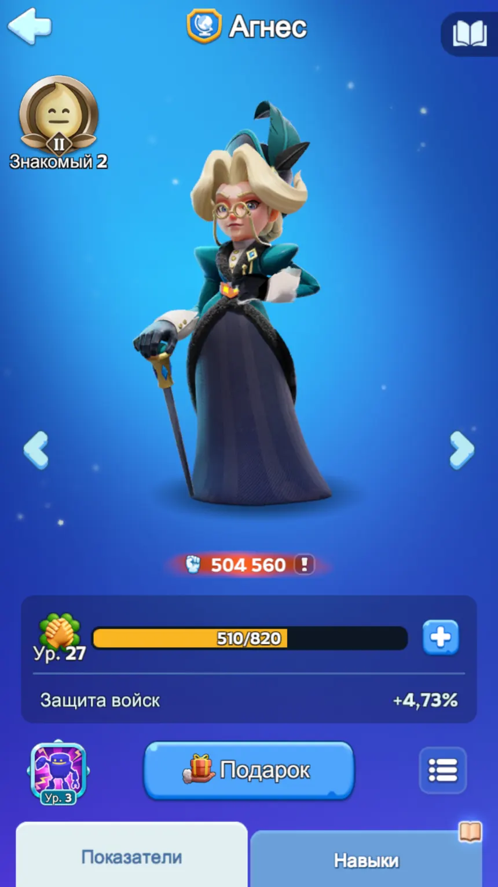
У каждого Эксперта есть четыре обычных навыка и талант. Обычные навыки прокачиваются отдельно. Талант связан со сближением и усиливается по мере развития отношений.
Эксперты выходят поколениями. На типичном таймлайне первые волны открываются примерно раз в 45 дней: 1-е поколение — около 150-го дня государства, 2-е — около 195-го, 3-е — около 240-го. Это ориентир: конкретная дата зависит от прогресса государства и доступности обновления.
2. Походы: где начинается система
Поход по тундре — основной способ знакомиться с Экспертами и продвигать отношения. Каждая следующая станция расходует походный припас. Позже открывается и «Рубеж», но для большинства игроков базовым маршрутом всё равно остаётся именно обычный тундровый поход.
Бесплатный маршрут для всех
Это основной режим для обычного игрока: он работает на бесплатных припасах, даёт стабильное сближение и не требует специальных вложений.
- Тратит обычные походные припасы.
- Подходит всем игрокам без дополнительных расходов.
- Именно здесь вы будете проводить большую часть походов.
В основном инструмент для донатеров
Позволяет точнее направлять прогресс, но обычному игроку редко нужен как ключевой режим. Без ресурса на ускоренное продвижение его ценность заметно ниже.
- Полезен тем, кто целенаправленно вкладывается в систему.
- Нужен скорее для ускорения и тонкой настройки, чем для базового развития.
- Если выбор стоит между ними, бесплатный «Поход по тундре» — более универсальный вариант.
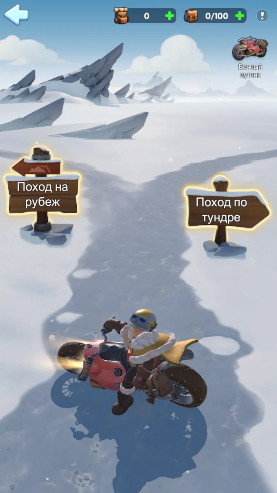
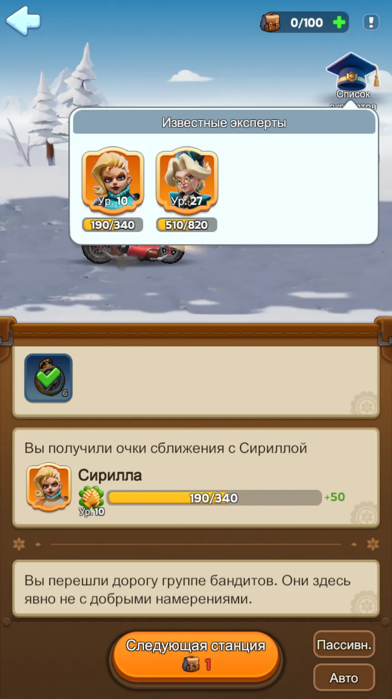
Когда приходят обычные походные припасы
Всего — 40 бесплатных обычных походных припасов в сутки.
3. Сближение и прокачка навыков
У Эксперта одновременно развиваются две связанные вещи: сближение и обычные навыки. Сближение открывает отношения и доступ к новым ступеням, а навыки требуют отдельного обучения.
Дают +10, +100 или +1000 сближения. Используем их прежде всего на выбранном приоритетном Эксперте, а не размазываем автоматически по всем.
Нужны на ключевых этапах отношений. Универсальные печати особенно важно не сливать в дорогого боевого Эксперта без ясной цели.
Идут на обучение навыков вместе с опытом изучения и временем. Это отдельный дефицит развития.
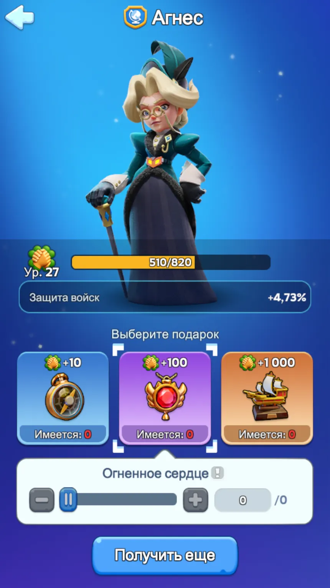
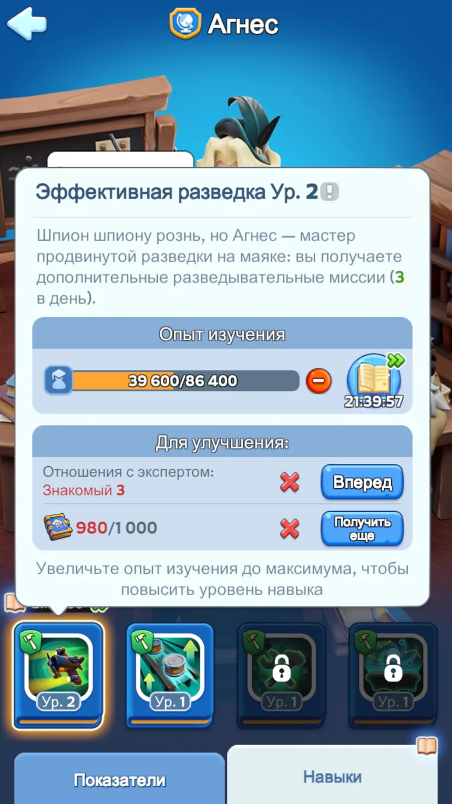
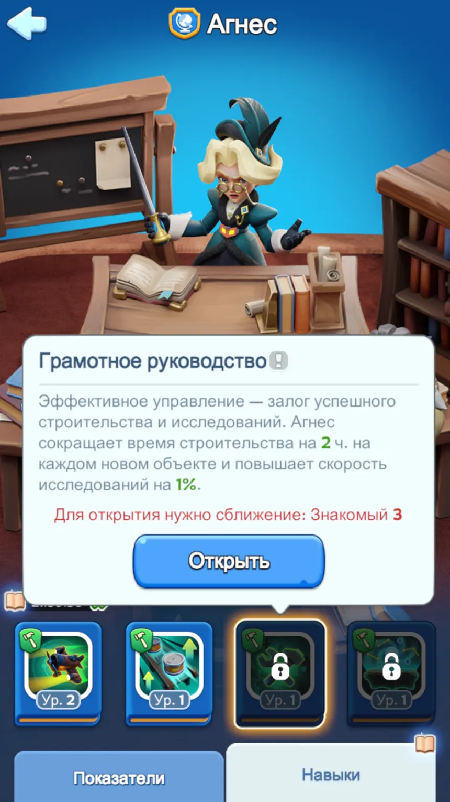
4. Кого качать первым
Универсальное правило для обычного игрока: сначала Эксперты, которые постоянно разгоняют экономику и повторяемые награды. Узкоспециализированный бой идёт после них. В первом поколении это даёт понятную последовательность.
Агнес
Ежедневная польза: разведка, энергия, строительство, исследования, тайный магазин и Сундуки Искателя.
Сирилла
Повторяемая экономика через Медвежью охоту: материалы развития и усиление результата регулярного альянсового события.
Хольгер
Полезен через Арену и её магазин. Для активного игрока ценен, но его отдача уже сильнее зависит от конкретного режима.
Ромул
Сильный боевой Эксперт, но очень дорогой. Для обычного игрока универсальные печати здесь легко превращаются в потерянную экономику.
И ещё один важный принцип: не обязательно доводить первого Эксперта до абсолютного максимума перед переходом к следующему. Рабочая схема — взять сильные пороги и открытые уровни ключевых навыков, затем направить ресурс в следующего экономического Эксперта.
5. Агнес: как выглядит хороший экономический Эксперт
Агнес хорошо показывает, почему экономические Эксперты стоят впереди. Её бонусы не привязаны к одному короткому событию: они касаются ежедневной разведки, энергии, строительства, исследований, магазина и сбора ресурсов.
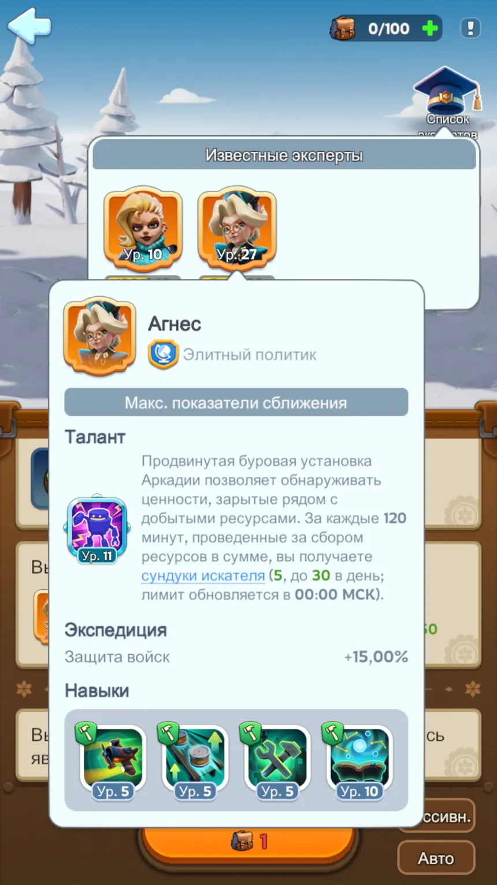
Скриншоты четырёх навыков АгнесТочные игровые формулировки и максимальные значения.
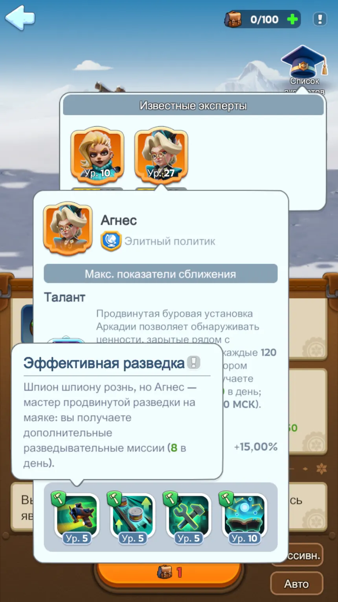
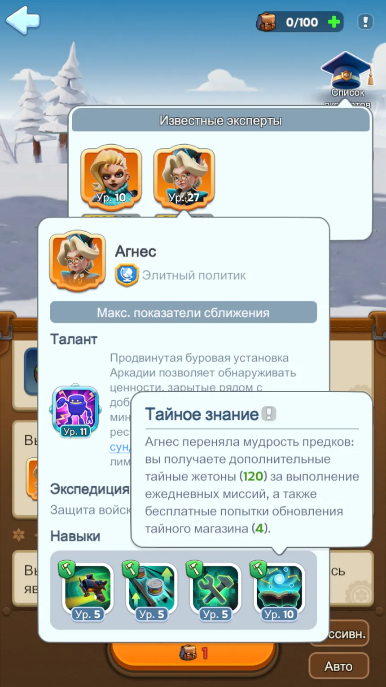
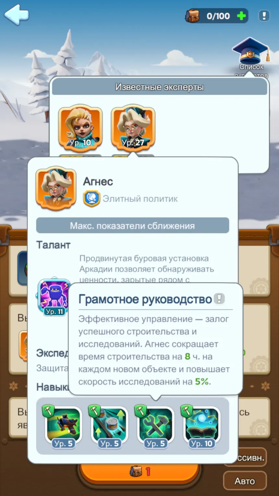
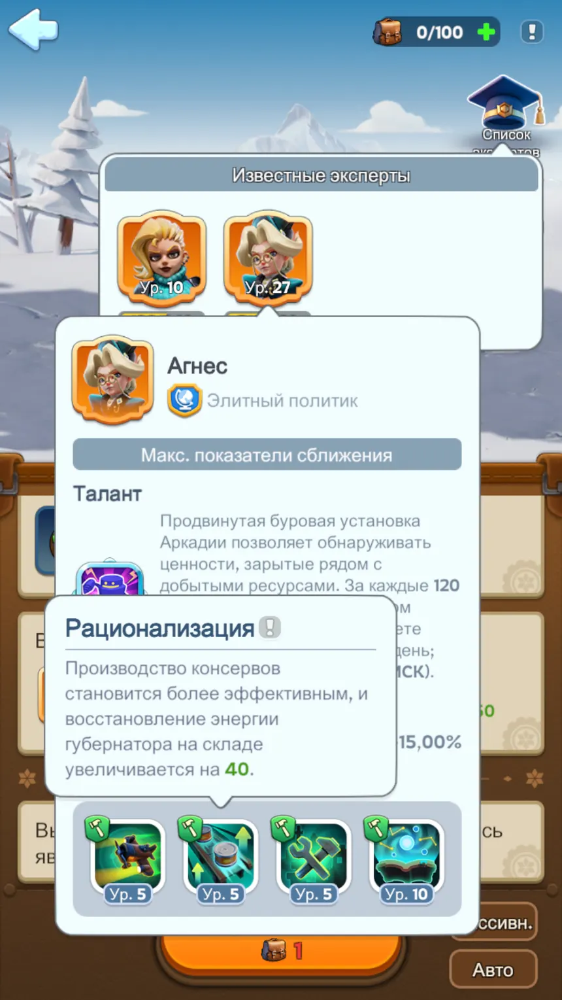
6. Талант Агнес и Сундуки Искателя
Талант «Раскол земли» награждает длительный сбор ресурсов. В показанном примере 3-й уровень даёт 1 Сундук Искателя за каждые 120 минут суммарного сбора с дневным лимитом 14; следующий уровень уже даёт 2 сундука с лимитом 16. На максимуме талант доходит до 5 сундуков за каждые 120 минут и лимита 30 в сутки.
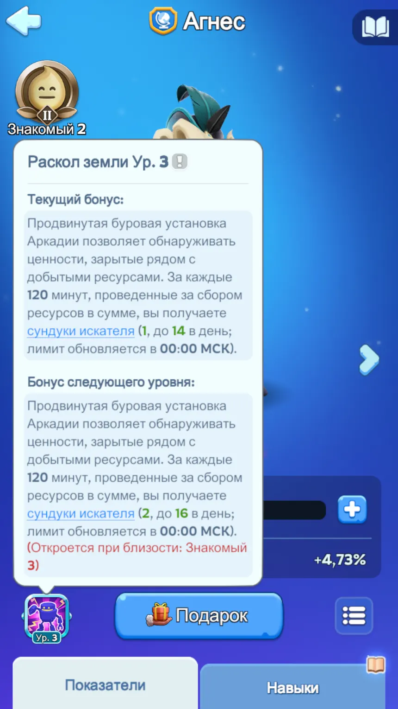
Что выпадает из Сундука ИскателяПолный список наград и вероятностей по игровому экрану.
| Награда | Количество | Шанс |
|---|---|---|
| Кристалл огня | ×10 | 1% |
| Кристалл огня | ×1 | 20% |
| Алмазы | ×1000 | 2% |
| Алмазы | ×10 | 20% |
| Компонент усиления опыта | 100 очков ×1 | 3% |
| Компонент усиления опыта | 10 очков ×1 | 20% |
| Общее ускорение | 1 час ×1 | 4% |
| Общее ускорение | 5 минут ×1 | 30% |
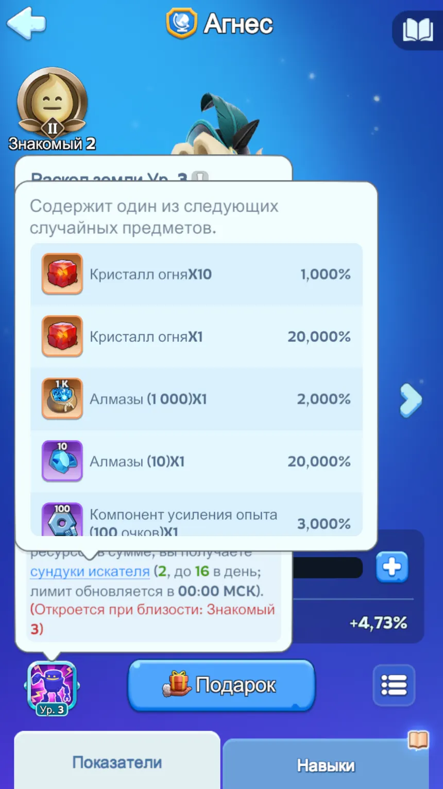
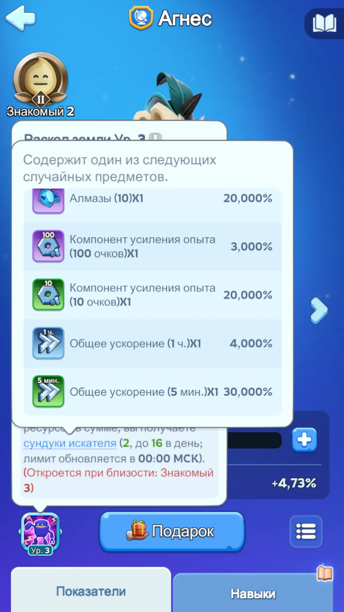